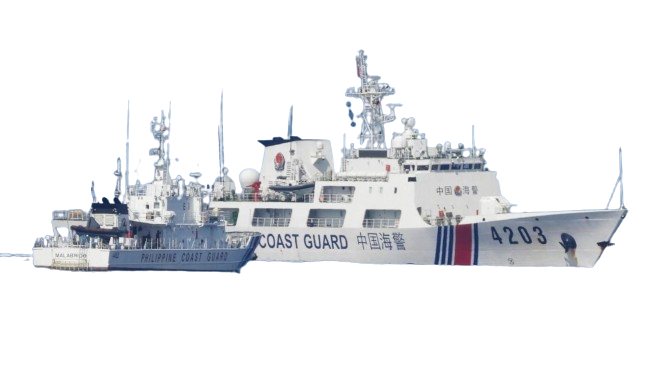

a brief context
This year, 2023, we can say that we are very much abundant with articles surrounding the Philippines and China. After all, the dispute between the two countries is still ongoing.
We all know the territorial dispute between China and the Philippines. This contention started in the year 1990s. During these times, China started constructing infrastructures within the West Philippine Sea.
Of course, this news reached the Philippine Government. They protested that China has no rights in crossing the borders of the Republic of the Philippines. Unfortunately, this did not stop China from crossing the Philippine perimeters. They claim that, historically, this portion of the Philippines is and has always been their territory. This conflict has been ongoing for years. By July 2016, the arbitral ruling between the Philippines and China had been favorable that the area in the West Philippine Sea (Scarborough Shoal) that China has been trying to invade is the ownership of the Philippines.
Nonetheless, the result of the court made people think that this conflict would slowly end. Unfortunately, the tension between the two countries continues to rise, especially by this year, 2023.
see videos below
As the years go by, the tension between the two countries rises more and more. From simply seeing ships of the two countries together in one area, to a Chinese ship aiming a water canon at a Philippine boat vessel. Yes, you've read that right. On August 5 2023, A Chinese vessel aimed a water canon at a Philippine supply boat. When the Philippines addressed this concern stating that it was injustice, China replied that the Philippines had trespassed their borders. Another event is that the China Coast Guard would communicate with the Philippine Coast Guard through radio stating that Filipinos should leave the area since they claim it's theirs.
We can only hope and pray that this issue is resolved. As we've seen from the past few years, it is indeed a challenge to create agreements with the other country. After all, these two nations, the Philippines and China, claim ownership of the territory. It is clear that none of them wants to let go of the region.